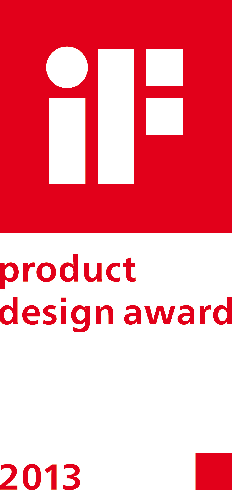
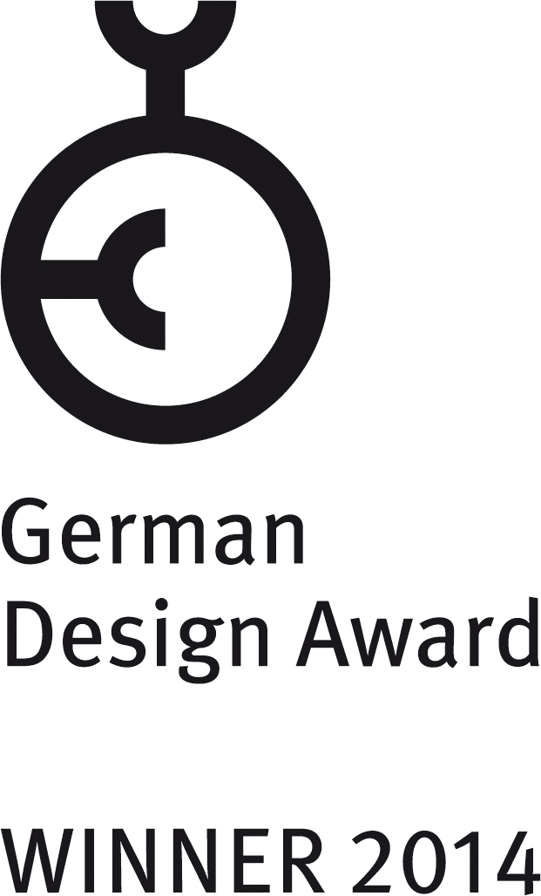
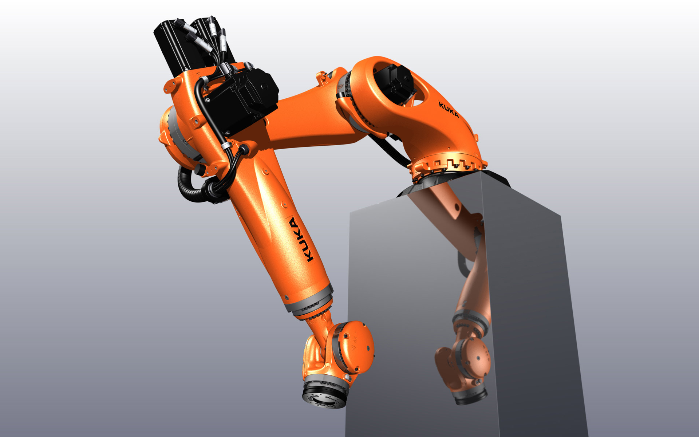
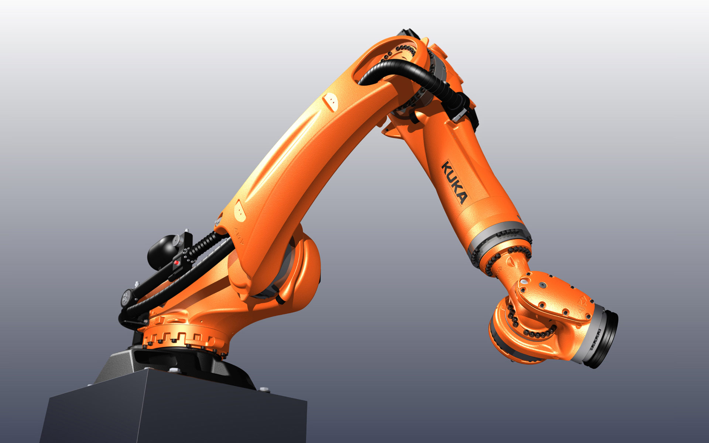
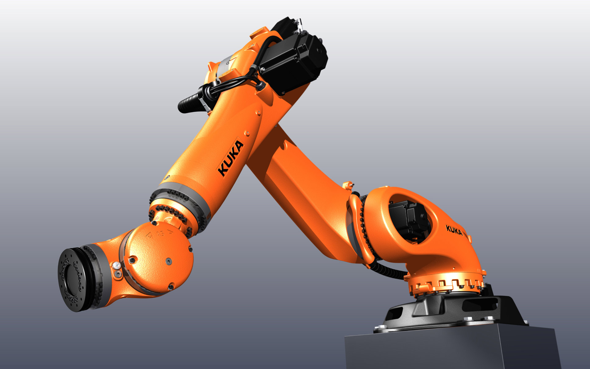
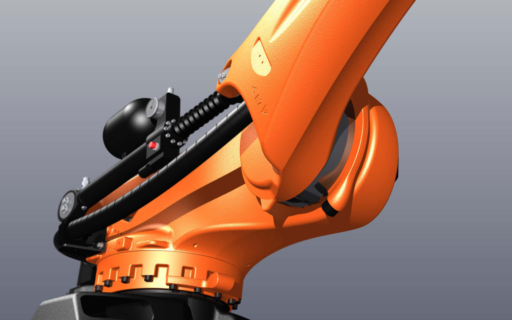

KUKA KR 240 Quantec K
Shelf-Mounted Robot
KUKA KR 240 Quantec K
Konsolroboter
The KR 240 QUANTEC ultra K is a shelf-mounted robot for quick and accurate spot welding, assembly and packaging tasks with a degree of precision amounting to ±0.06 mm.
Installed on a console this robot type was developed especially to work from top to the ground.
Organically designed structural elements give a dynamic appearance whilst ensuring a high degree of
mechanical torsional and bending stiffness. Smooth transitions between structural forms improve the
mechanical force transmission and the physical dynamic properties. Every component has its technical
function, with superfluous aesthetic elements nowhere to be seen. This saves raw materials and limits
energy consumption.
Selić Industriedesign service: Design consultation, design concept, design sketches, CAD design support,
CAD freeform modeling, design refinement, processing of design data for the engineering department
Der KR 240 QUANTEC ultra K ist ein Konsolroboter zum schnellen und präzisen Punktschweißen, Montieren und Verpacken mit einer Genauigkeit von ±0,06 mm.
Montiert auf einer Konsole wurde dieser Robotertyp speziell für das Arbeiten von oben in die Tiefe
entwickelt.
Organisch gestaltete Bauelemente visualisieren die Leistungsfähigkeit, sorgen mechanisch für hohe
Biegefestigkeit und Torsionssteifigkeit. Fließende Formübergänge erhöhen den mechanischen Kraftfluss und
die physikalischen Dynamik-Eigenschaften. Jedes Bauteil hat seine technische Funktion, überflüssige
Verkleidungselemente sucht man vergebens. Das schont Rohstoffe und lässt den Energieverbrauch sinken.
Selić Industriedesign Dienstleistung: Designberatung, Designkonzept, Designentwürfe, CAD-Design
Unterstützung, CAD-Freiform-Modellierung und Detailgestaltung, Aufbereitung von Designdaten für die
Konstruktion




Images © Selić Industriedesign